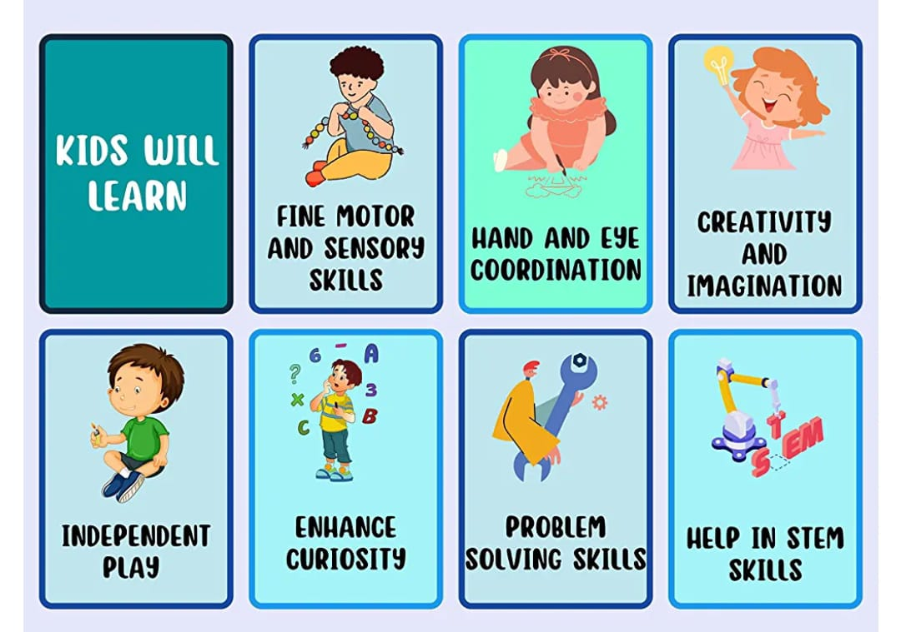

Why learn on First Four Years
In First Four Years, we provide unique way of transperency, i.e. PARENT-CHILD Transperency. Through Glass doors we allow parent to observe his child doing activites and learning. Activites like Abacus learning, Sandpit-digging, Moulding, Music wall for ear-eye coordination,fun with Skates, and many more... will be performed. We educate your child in a creative, supportive, and warm environment so that your child will not only learn but will enjoy learning too!
First Four Years

Meet Us
1st Floor,Bansari Repose,Opp. Shreenath Classic,
Nana-Chiloda, Ahmedabad - 382330
Reach Us
Contact: 9978649130
Email: neelbasantani69@gmail.com